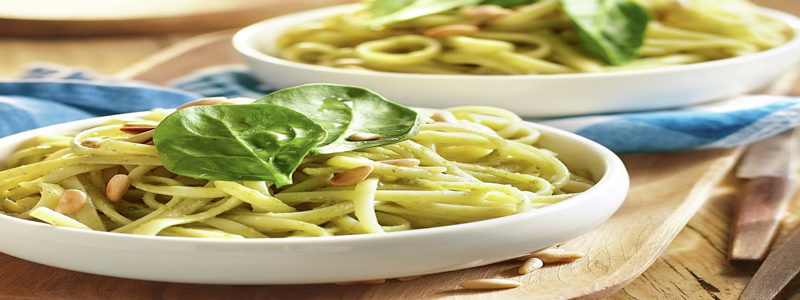

Mi receta favorita: Pasta casera con salsa de tomate
¿Te encanta cocinar? Te invito a probar mi receta favorita: una deliciosa pasta casera acompañada de una salsa de tomate única que no solo es fácil de preparar, sino también muy sabrosa. Perfecta para cualquier ocasión.
Ingredientes:
- 200 g de harina
- 2 huevos
- 1 cucharada de aceite de oliva
- Una pizca de sal
- 1 kg de tomates maduros
- 1 diente de ajo
- Albahaca fresca al gusto
- Queso parmesano rallado
Para comenzar, necesitarás los ingredientes básicos para la pasta y la salsa. Asegúrate de tener tomates frescos y albahaca para un sabor auténtico. Ahora, vamos a preparar la pasta casera.
Preparación de la pasta:
1. En un bol grande, mezcla la harina con los huevos y la sal. Amasa hasta obtener una masa suave y homogénea.
2. Estira la masa con un rodillo hasta que tenga un grosor de unos 2 mm. Corta la masa en tiras largas para formar la pasta.
3. Cocina la pasta en agua hirviendo con sal durante 3-4 minutos, hasta que esté al dente. Luego, escúrrela y resérvala.
Preparación de la salsa de tomate:
1. Lava y corta los tomates en trozos pequeños. En una sartén, agrega el aceite de oliva y el ajo picado. Cocina a fuego medio hasta que el ajo esté dorado.
2. Añade los tomates a la sartén y cocina por unos 20 minutos hasta que se forme una salsa espesa. Agrega sal y pimienta al gusto.
3. Añade la albahaca fresca picada y cocina unos minutos más. ¡La salsa está lista!
Montaje del plato:
1. Sirve la pasta en un plato grande y vierte la salsa de tomate encima.
2. Agrega queso parmesano rallado al gusto y decora con más hojas de albahaca.
¡Y listo! Ya tienes una deliciosa pasta casera con salsa de tomate fresca, perfecta para cualquier ocasión. ¡Disfruta!
Volver al blog